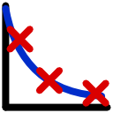
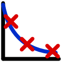

Next: relax_disp.r2eff_read Up: The list of functions Previous: relax_disp.r20_from_min_r2eff Contents Index
 

Estimate R2eff errors by the Jacobian matrix.
spin_id: The spin ID string to restrict value setting to.
epsrel: The parameter to remove linear-dependent columns when J is rank deficient.
verbosity: The higher the value, the greater the verbosity.
This is a new experimental feature from version 3.3.
This will estimate R2eff errors by using the exponential decay Jacobian matrix `J' to compute the covariance matrix of the best-fit parameters.
This can be an huge time saving step, when performing model fitting in R1rho. Errors of R2eff values, are normally estimated by time-consuming Monte-Carlo simulations.
This method is inspired from the GNU Scientific Library (GSL).
The covariance matrix is given by: covar = Qxx = (JˆT.W.J)ˆ-1, where the weight matrix W is constructed by the multiplication of an Identity matrix I and a weight array w. The weight array is 1/errorsˆ2, which then gives W = I.w = I x 1/errorsˆ2.
Qxx is computed by QR decomposition, JˆT.W.J=QR, Qxx=Rˆ-1. QˆT. The columns of
 which satisfy: |R_{kk}| ≤ epsrel |R_{11}| are considered linearly-dependent and are excluded from the covariance matrix (the corresponding rows and columns of the covariance matrix are set to zero).
which satisfy: |R_{kk}| ≤ epsrel |R_{11}| are considered linearly-dependent and are excluded from the covariance matrix (the corresponding rows and columns of the covariance matrix are set to zero).
The parameter `epsrel' is used to remove linear-dependent columns when J is rank deficient.